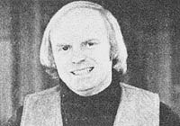
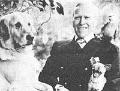

Selected doin's well-known MOTHER-types from around the world.
To catch up on the latest doings of John Todd is to be given an overview of some of the most exciting goings-on in the whole field of alternative technology.
John, if you don't already know, is co-founder and director of The New Alchemy Institute in Woods Hole, Massachusetts. Established in 1969, N.A.I. also has centers in Costa Rica and Canada. The common philosophy of the three, John says, is "to find more kindly ways of working with the planet", and at each one the kind of work that goes on is dictated by the local environment ("although there's a lot of cross-pollination").
The "Alkies" ( "right now we're a group of some 20-odd") are made up of architects, horticulturists, solar energy specialists, fish culturists, systems people, and windmill developers. And, "In terms of the range of things we're all doing," John says, "I can hardly begin to describe it."
John's current projects, besides his administrative work, include N.A.I.'s two major bio-shelters, or microfarms: the Cape Cod ark and the even more impressive Canadian ark on Prince Edward Island. Each is "a kind of terrestrial capsule", solar-heated and wind-powered . . . "a contained entity to produce year-round foods in northern climates". The Canadian ark has within it a barn with space for food preservation, a human habitation with a composting toilet, a research lab, a family greenhouse, an aquaculture system, ongoing hydroponic experiments, commercial crops, integrated pest controls, and a propagating bench for the rooting of tree cuttings.
Still another Todd interest: the design of agricultural forests in the U.S. and Canada . . . forest-based ecosystems involving not only trees but livestock, equivalent in productivity and economics to orthodox farms.
Then there are numerous studies like the one (described in a recent N.I.A. book) on the use of lichens to identify kinds and degrees of air pollution, the advanced wind-driven powerplant for the Canadian government (a first prototype has been operating since last fall), and John's "long-overdue" book, The Sun Dries Us While We Dance: A New Alchemist's Tale of Pioneering for the Twenty-first Century, which will be "a kind of narrative on the whole question of design and restructuring of society within a more human and more biologically apt framework". -Sonia Nordenson.
As a child, W.E. (Buster) Lloyd-Jones contracted polio and was confined to his bed for a lengthy spell. But that illness, which left him crippled, also profoundly influenced the course of Buster's life. "I demanded that my bed be placed beside some French windows and that they be kept open at all times," Mr. Lloyd-Jones now remembers. "Sometimes it was really cold, but I pretended to like it. The truth was I wanted an uninterrupted view of the garden . . . and I wouldn't have kept the animals and birds out of my room for anything."
And animals and birds did indeed visit the bedridden boy. His own dogs and cats slept with him, a nearby glass case held tortoises and lizards, and ducks, bantams, starlings, thrushes, squirrels, and-once-even a mole scurried in and out of the sick room.
The confined youngster was soon spending hours in close observation of his bird and animal friends. "I wonder," he thought, "why the pigeons spend so much time in the elderberry trees . . . why, they've been there so long that their breasts are all stained purple from the fruit. And why do the cats eat couch grass . . . don't they know it'll make them sick? And why does Paddy, my Irish terrier, always smell of wild garlic?"
Eventually the bedridden boy concluded that the pigeons were storing iron for the winter, that his cats sometimes felt unwell and wanted to make themselves sick enough to vomit, and that Paddy instinctively knew that garlic is a potent natural remedy for worms. "I found this all fascinating," says Buster, "and I became determined to get well myself, grow up, and become a veterinarian."
In spite of his severe paralysis, Mr. Lloyd-Jones did become a vet . . . but not an ordinary one. Instead of lazily prescribing the latest chemical concoctions touted by the large pharmaceutical houses, Buster cured his bird and animal patients with extracts and diet supplements of seaweed (for iodine), parsley, watercress (vitamin A), and other natural substances. Many champions were raised under his direction and Mr. Lloyd-Jones began to receive national acclaim. Soon, his clients included many distinguished celebrities . . . including Sir Winston Churchill (who was advised that he fed too many chocolates to his poodle, Rufus, and that the dog should be put on a diet).
Today, England's beloved veterinarian Buster Lloyd-Jones is still going strong. Although retired from practice, he works an eight-hour day writing for natural food publications and acting as a consultant to Denes, a British pet health food company.
Buster firmly believes that "animals are instinctive naturopaths but, these days, domesticity has blunted the fine edge of instinct and keeps most pets from eating their own natural remedies. A great number of pets, in fact, are fed very badly, and this is reflected in their general condition. I know some people have called me a crank, but I really don't mind. Humans cannot live properly without vitamins, minerals, and protein . . . nor can animals. And I still believe that natural sources of these things are the best! "- John T. Kosarowich.
Are you up on the latest doings of someone (such as any of the innovative pioneers featured in MOTHER'S Plowboy Interviews) who's achieved recognition in a field regularly covered by this magazine? If so, send us a lightly written 200-word report on that person (along with a snappy black-and-white photograph), and-providing your report is used in NEWSWORTHIES-we'll gladly send you a flat $50 ($25 without the photo). Send contributions to NEWSWORTHIES Editor, THE Mother Earth News (restricted) , P.O. Box 70, Hendersonville, .N.C. 28739.
|
 DR.JOHN TODD |
 BUSTER LLOYD-JONES |
|